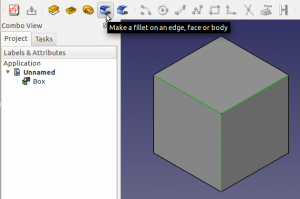

Raccordo Raccordo
|
| Posizione nel menu
|
| PartDesign → Raccordo
|
| Ambiente
|
| PartDesign, Completo
|
| Avvio veloce
|
| Nessuno
|
| Vedere anche
|
| Raccordo
|
|
Questo strumento crea dei raccordi (arrotondamenti) sui bordi selezionati di un oggetto.
Nella struttura del progetto viene creata una nuova voce Fillet (Raccordo), seguita da un numero sequenziale se nel documento esistono già altri raccordi.
 Selezionare i bordi sull'oggetto prima di avviare lo strumento.  Impostare il raggio di raccordo nei parametri di Raccordo.  Nella struttura del progetto viene aggiunto un oggetto Raccordo. |
Utilizzo
- Selezionare uno o più bordi di un oggetto, quindi avviare lo strumento facendo clic sulla sua icona o tramite il menu.
- Nei Parametri Raccordo della finestra delle opzioni, impostare il raggio di raccordo inserendo il valore, o facendo clic sulle frecce su / giù. Il raccordo applicato viene mostrato in tempo reale.
- Premere OK per convalidare.
- Per una catena di spigoli tangenti l'uno all'altro, può essere selezionato un bordo singolo, il raccordo si propaga lungo la catena.
- Per modificare il raccordo dopo che la funzione è stata convalidata, fare doppio clic sull'etichetta del Raccordo nella struttura del progetto, oppure fare clic destro su di esso e selezionare Modifica Raccordo.
Raccordo di PartDesign e Raccordo di Part
Il Raccordo di PartDesign non deve essere confuso con il Raccordo dell'ambiente Parte.
Anche se condividono la stessa icona, essi non sono uguali, e non sono utilizzati nello stesso modo.
Ecco come si differenziano l'uno dall'altro:
- Il Raccordo di PartDesign è parametrico. Il suo raggio può essere modificato anche dopo che il raccordo è stato applicato, ciò non è possibile con il Raccordo di Part.
- Con il Raccordo di PartDesign si deve prima selezionare i bordi e poi attivare lo strumento. Con il Raccordo di Parte si può avviare lo strumento poi selezionare un oggetto e, infine, i bordi.
- Il Raccordo PartDesign crea una voce Raccordo separata (seguita da un numero sequenziale se ci sono già raccordi esistenti) nella struttura del progetto. Il Raccordo Parte diventa il genitore dell'oggetto a cui è stato applicato.
- Il Raccordo PartDesign offre un'anteprima in tempo reale del raccordo applicato all'oggetto prima di convalidare la funzione.
- Il Raccordo Parte supporta la funzione raggio variabile (con un raggio di inizio e un raggio finale). Il Raccordo di PartDesign non ha questa possibilità.
|
Script
Lo strumento Fillet può essere utilizzato nelle macro e dalla console di Python tramite la seguente funzione:
Box = Box.makeFillet(3,[Box.Edges[0]]) # 1 Fillet
Box = Box.makeFillet(3,[Box.Edges[1],Box.Edges[2],Box.Edges[3],Box.Edges[4]]) # for several Fillets
- 3 = valore del raggio
- Box.Edges[2] = lo spigolo con il suo numero identificativo
Esempio:
import PartDesign
from FreeCAD import Base
Box = Part.makeBox(10,10,10)
Box = Box.makeFillet(3,[Box.Edges[0]]) # pour 1 Fillet
Box = Box.makeFillet(3,[Box.Edges[1],Box.Edges[2],Box.Edges[3],Box.Edges[4]]) # for several Fillets
Part.show(Box)


{kind=link}